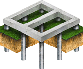

Хотите надежный фундамент с гарантией по договору и неограниченным сроком службы?
Забивные сваи за 2 дня
Узнайте, подойдет ли вам свайный фундамент
Что такое забивные сваи?


Для частного дома или бани из любых материалов
Для хозяйственных построек, гаражей и ангаров

Для крыльца, веранды, террасы или беседки

Для производственных зданий и складов
Почему железобетонные сваи такие прочные и долговечные?
меньше 100-300 циклов замораживания (F100-500)
Сертификат на продукцию наших поставщиков можно
посмотреть по ссылке.

Преимущества фундамента на забивных железобетонных сваях
Выгоно
Конструкция 10х10 обойдется в 70 тыс. Дешевле ленточного фундамента на 65 тыс.
Надежно
Прослужит 200 лет. Не сгниет и не заржавеет. Одна свая выдерживает нагрузку до 40 тонн

Быстро
Конструкция 10х10 забивается за 1 рабочую смену. 1-2 дня на доставку техники

Чисто
Земельные работы не проводятся - ландшафт остается без изменений. Никаких куч земли

Всесезонно
Конструкции можно возводить зимой, при осадках. Не важен даже рельеф местности

Устойчиво
Не боится пучения грунта, так как устонавливается ниже глубины промерзания грунта
Для Вас сравнили характеристики различных фундаментов
 |
 |
 | |
|
Характеристики |
Железобетонные сваи |
Буронабивные опоры |
Ленточный фундамент |
|---|---|---|---|
| Срок установки | 1-3 дня | 7 дней | 10-14 дней |
| Когда устанавливать | Любое время года | Сухая и теплая погода | Сухая и теплая погода |
| Когда можно строить дом | На следующий день | Через 21 день | Через 21 день |
| Какую нагрузку выдержит | До 40 т. на одну опору | До 20 т. на одну опору | Около 5-15 т. на м2 |
| Срок службы фундамента | 200 лет | 100 лет | 100 лет |
| Стоимость для здания 10х10 | 70 000 руб. | 90 000 руб. | от 200 000 руб. |
Примеры работ и цены
Выполняем фундамент под ключ и даем гарантию 5 лет
Гарантия прописана в договоре в соответствии с законодательством РФ

- 1 этап
- 2 этап
- 3 этап
- 4 этап
- 5 этап
- 6 этап
- 7 этап
- 8 этап
Узнаем несущую способность грунтов
Исследование грунта поможет сэкономить на строительстве дома и защитит от переплаты за перестраховку проектировщика и прораба.
Далеко не все типы грунтов могут быть пригодны для капитального строительства, даже если речь
идет об одноэтажном частном доме. Чрезмерно пучинистые, обводненные, склонные к промерзанию
грунты требуют использования специальных типов фундамента. Если исследование не было проведено,
то при выборе неправильного типа фундамента здание может начать проседать, в фундаменте и стенах
появятся трещины, что приведет к перекосу и выходу из строя оконных и дверных систем, проводки,
трубопроводов. Самое, мягко говоря, неприятное последствие –
частичное или полное обрушение конструкций.

Узнаем несущую способность грунтов
Исследование грунта поможет сэкономить на строительстве дома и защитит от переплаты за перестраховку проектировщика и прораба.
-
1 этап
Узнаем несущую способность грунтов
Исследование грунта поможет сэкономить на строительстве дома и защитит от переплаты за перестраховку проектировщика и прораба.
Далеко не все типы грунтов могут быть пригодны для капитального строительства, даже если речь идет об одноэтажном частном доме. Чрезмерно пучинистые, обводненные, склонные к промерзанию грунты требуют использования специальных типов фундамента. Если исследование не было проведено, то при выборе неправильного типа фундамента здание может начать проседать, в фундаменте и стенах появятся трещины, что приведет к перекосу и выходу из строя оконных и дверных систем, проводки, трубопроводов. Самое, мягко говоря, неприятное последствие – частичное или полное обрушение конструкций.
-
2 этап
Узнаем несущую способность грунтов
Исследование грунта поможет сэкономить на строительстве дома и защитит от переплаты за перестраховку проектировщика и прораба.
Далеко не все типы грунтов могут быть пригодны для капитального строительства, даже если речь идет об одноэтажном частном доме. Чрезмерно пучинистые, обводненные, склонные к промерзанию грунты требуют использования специальных типов фундамента. Если исследование не было проведено, то при выборе неправильного типа фундамента здание может начать проседать, в фундаменте и стенах появятся трещины, что приведет к перекосу и выходу из строя оконных и дверных систем, проводки, трубопроводов. Самое, мягко говоря, неприятное последствие – частичное или полное обрушение конструкций.
-
3 этап
Узнаем несущую способность грунтов
Исследование грунта поможет сэкономить на строительстве дома и защитит от переплаты за перестраховку проектировщика и прораба.
Далеко не все типы грунтов могут быть пригодны для капитального строительства, даже если речь идет об одноэтажном частном доме. Чрезмерно пучинистые, обводненные, склонные к промерзанию грунты требуют использования специальных типов фундамента. Если исследование не было проведено, то при выборе неправильного типа фундамента здание может начать проседать, в фундаменте и стенах появятся трещины, что приведет к перекосу и выходу из строя оконных и дверных систем, проводки, трубопроводов. Самое, мягко говоря, неприятное последствие – частичное или полное обрушение конструкций.
-
4 этап
Узнаем несущую способность грунтов
Исследование грунта поможет сэкономить на строительстве дома и защитит от переплаты за перестраховку проектировщика и прораба.
Далеко не все типы грунтов могут быть пригодны для капитального строительства, даже если речь идет об одноэтажном частном доме. Чрезмерно пучинистые, обводненные, склонные к промерзанию грунты требуют использования специальных типов фундамента. Если исследование не было проведено, то при выборе неправильного типа фундамента здание может начать проседать, в фундаменте и стенах появятся трещины, что приведет к перекосу и выходу из строя оконных и дверных систем, проводки, трубопроводов. Самое, мягко говоря, неприятное последствие – частичное или полное обрушение конструкций.
-
5 этап
Узнаем несущую способность грунтов
Исследование грунта поможет сэкономить на строительстве дома и защитит от переплаты за перестраховку проектировщика и прораба.
Далеко не все типы грунтов могут быть пригодны для капитального строительства, даже если речь идет об одноэтажном частном доме. Чрезмерно пучинистые, обводненные, склонные к промерзанию грунты требуют использования специальных типов фундамента. Если исследование не было проведено, то при выборе неправильного типа фундамента здание может начать проседать, в фундаменте и стенах появятся трещины, что приведет к перекосу и выходу из строя оконных и дверных систем, проводки, трубопроводов. Самое, мягко говоря, неприятное последствие – частичное или полное обрушение конструкций.
-
6 этап
Узнаем несущую способность грунтов
Исследование грунта поможет сэкономить на строительстве дома и защитит от переплаты за перестраховку проектировщика и прораба.
Далеко не все типы грунтов могут быть пригодны для капитального строительства, даже если речь идет об одноэтажном частном доме. Чрезмерно пучинистые, обводненные, склонные к промерзанию грунты требуют использования специальных типов фундамента. Если исследование не было проведено, то при выборе неправильного типа фундамента здание может начать проседать, в фундаменте и стенах появятся трещины, что приведет к перекосу и выходу из строя оконных и дверных систем, проводки, трубопроводов. Самое, мягко говоря, неприятное последствие – частичное или полное обрушение конструкций.
-
7 этап
Узнаем несущую способность грунтов
Исследование грунта поможет сэкономить на строительстве дома и защитит от переплаты за перестраховку проектировщика и прораба.
Далеко не все типы грунтов могут быть пригодны для капитального строительства, даже если речь идет об одноэтажном частном доме. Чрезмерно пучинистые, обводненные, склонные к промерзанию грунты требуют использования специальных типов фундамента. Если исследование не было проведено, то при выборе неправильного типа фундамента здание может начать проседать, в фундаменте и стенах появятся трещины, что приведет к перекосу и выходу из строя оконных и дверных систем, проводки, трубопроводов. Самое, мягко говоря, неприятное последствие – частичное или полное обрушение конструкций.
-
8 этап
Узнаем несущую способность грунтов
Исследование грунта поможет сэкономить на строительстве дома и защитит от переплаты за перестраховку проектировщика и прораба.
Далеко не все типы грунтов могут быть пригодны для капитального строительства, даже если речь идет об одноэтажном частном доме. Чрезмерно пучинистые, обводненные, склонные к промерзанию грунты требуют использования специальных типов фундамента. Если исследование не было проведено, то при выборе неправильного типа фундамента здание может начать проседать, в фундаменте и стенах появятся трещины, что приведет к перекосу и выходу из строя оконных и дверных систем, проводки, трубопроводов. Самое, мягко говоря, неприятное последствие – частичное или полное обрушение конструкций.
Фото и видео работ


О компании
Abusus non tollit usum. Accepto damno. Accessio cedit principali. Actio bonae fidei. Actio in factum concepta. Actio in ius concepta. Actio in personam. Actio in rem. Actio noxalis. Actio poenalis. Alibi. A potiori. Argumenta ponderantur, non numerantur. Argumentum ad oculos.
Casum sentit dominus. Caveat emptor. Ceteris paribus. Condicio sine qua non. Contra factum non datur argumentum. Conventio facit legam. Corpus delicti. Crescente malitia crescere debet et poena. Cuius commodum, eius debet esse incommodum. Cuius commodum, eius periculum. Curia advisare vult!
ФУНДАМЕНТЫ
Damnum emergens et lucrum cessans. Deceptus pro nolente est. Duo cum faciunt idem, non est idem.
Falsus in uno falsus in omnibus. Fraus omnia corrumpit.